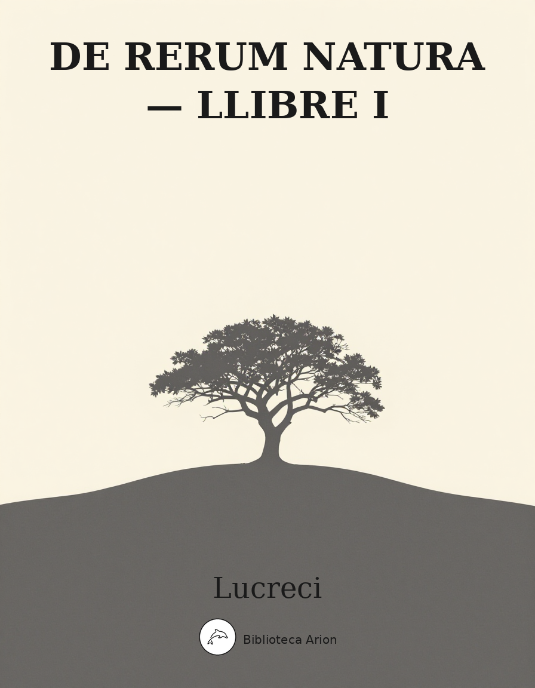
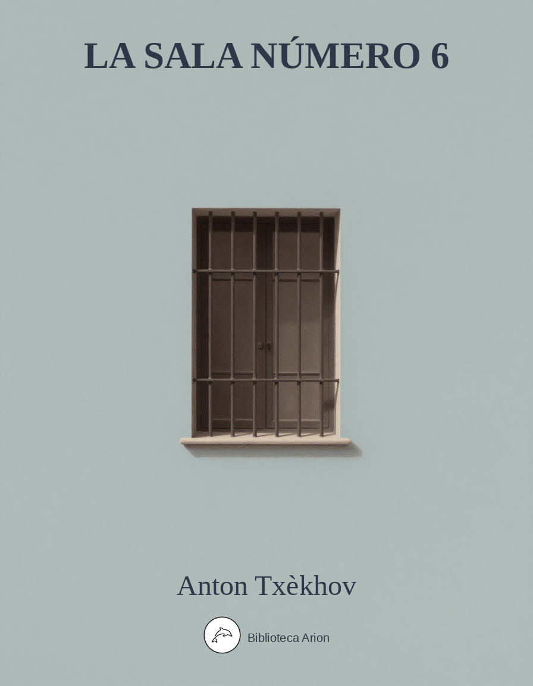
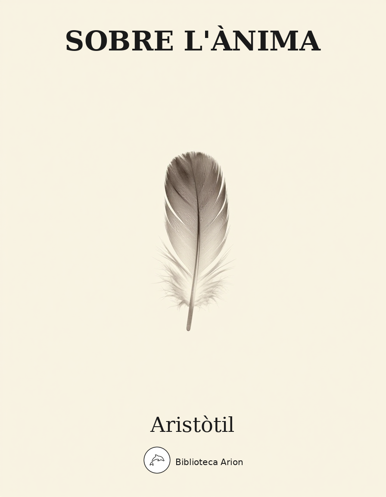
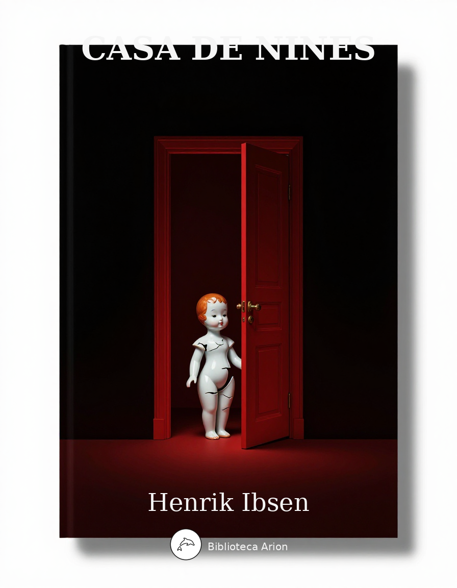
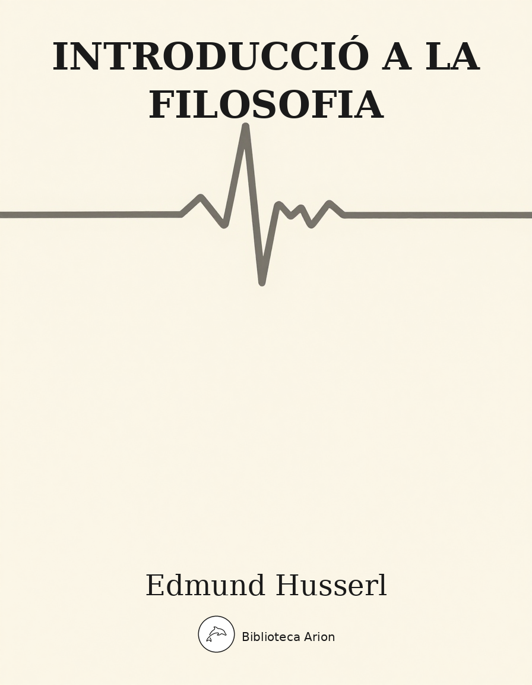
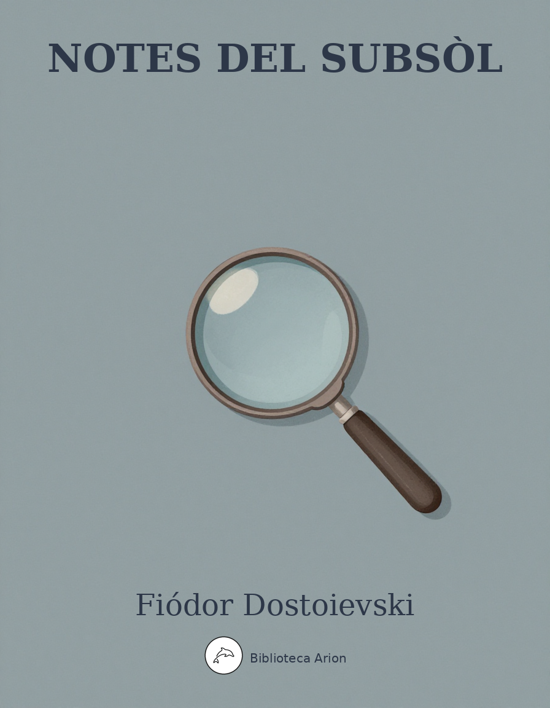
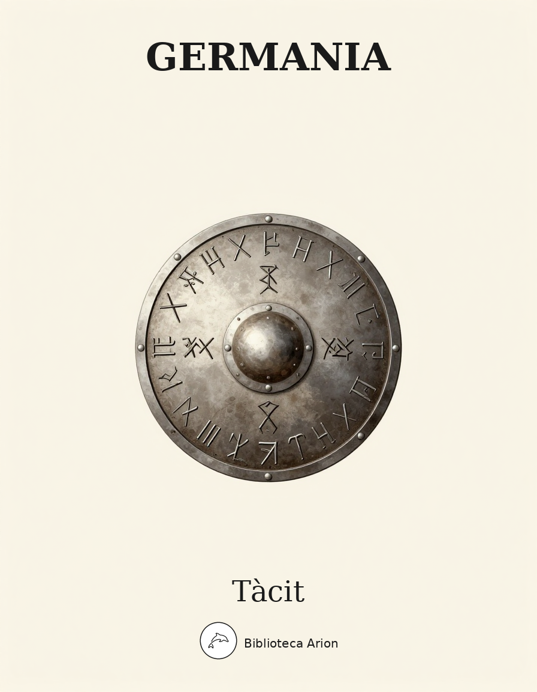
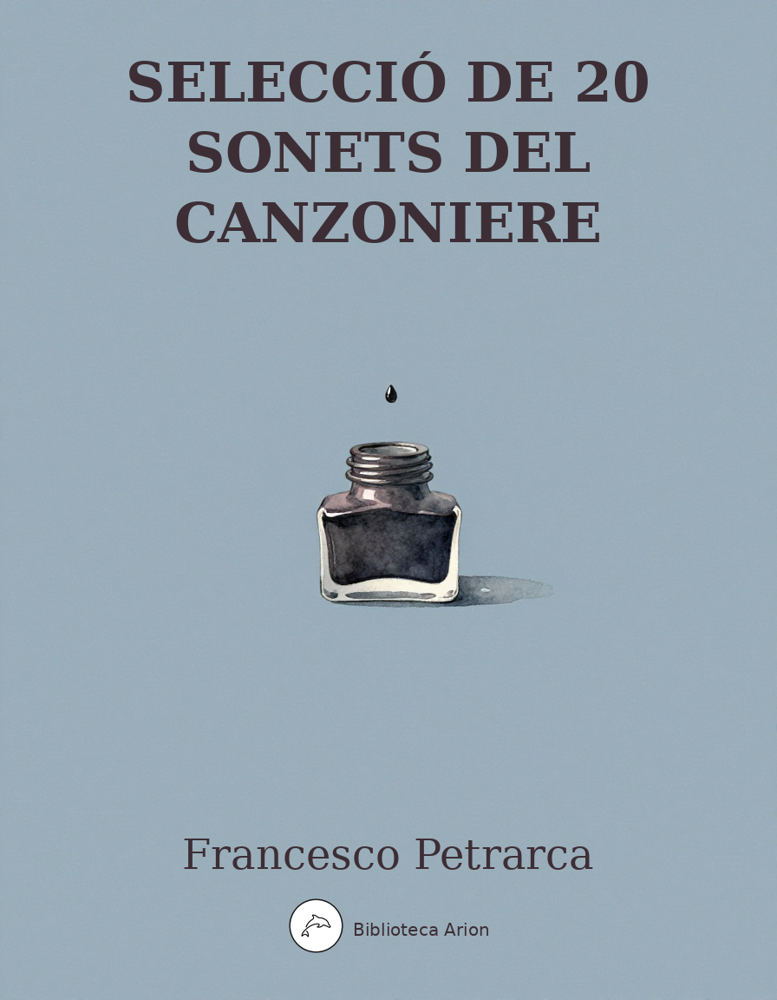
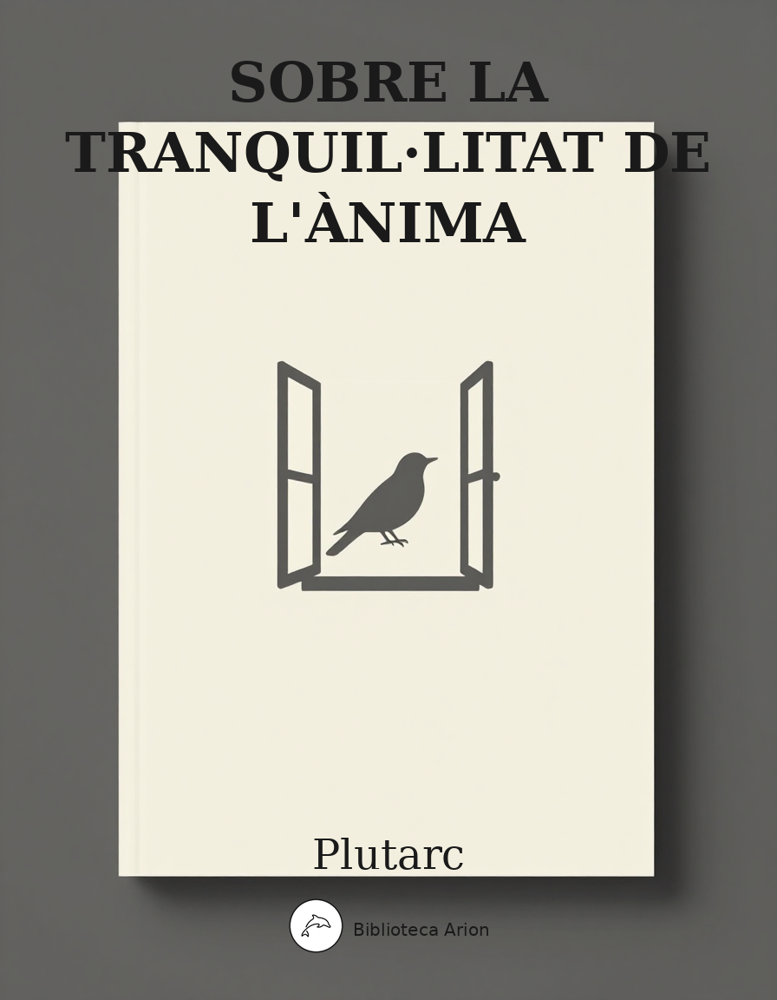
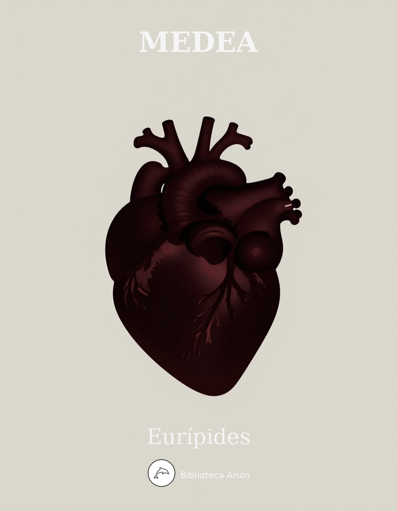

completatBiblioteca Arion
Traduccions obertes de clàssics universals al català
97 obres
·
89 autors
·
433300 paraules
Últims títols publicats

incompletLa Sala número 6

validatSobre l'Ànima

validatCasa de nines

validatIntroducció a la filosofia

validatNotes del subsòl

revisatGermania

revisatSelecció de Sonets del Canzoniere

revisatSobre la tranquil·litat de l'ànima

revisat